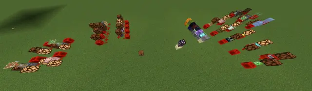
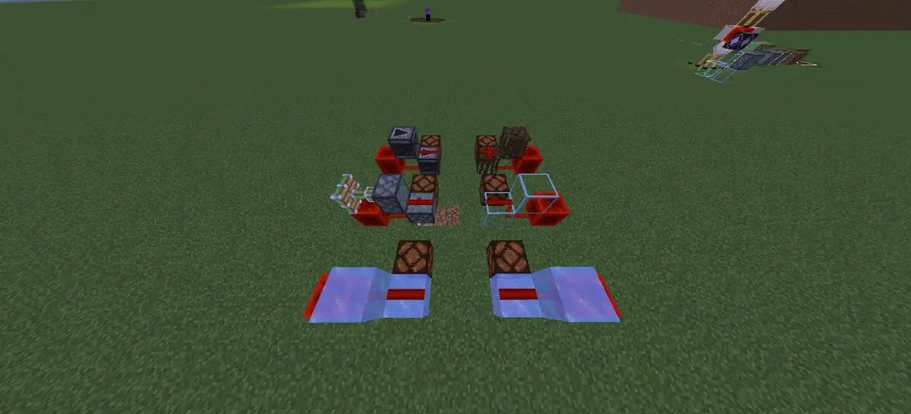
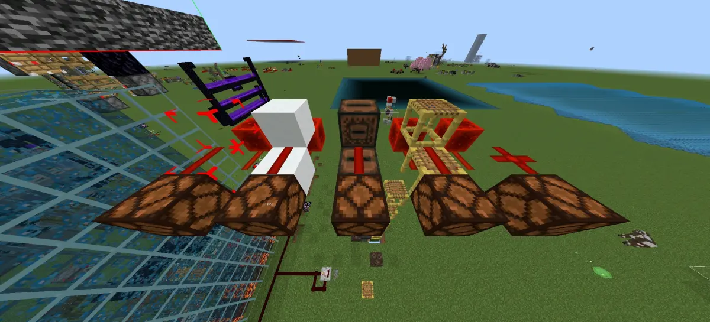
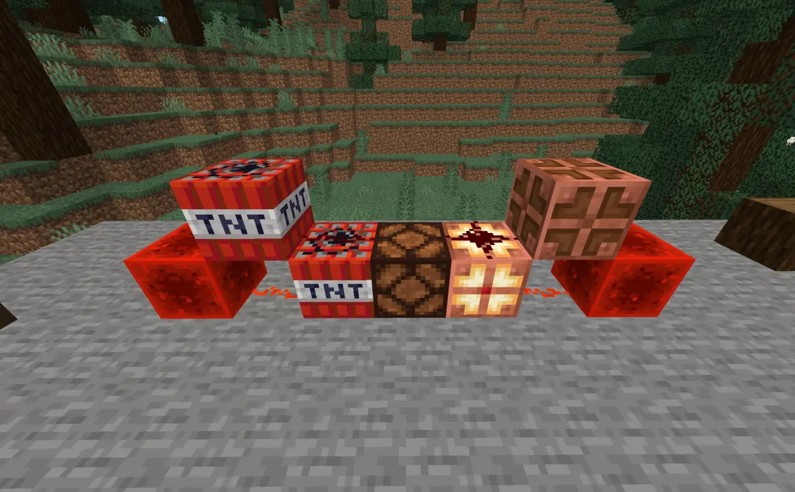
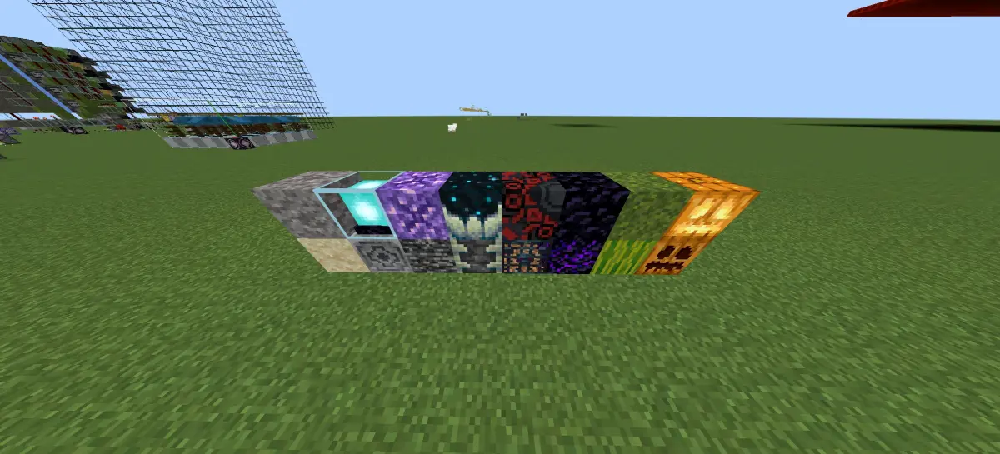
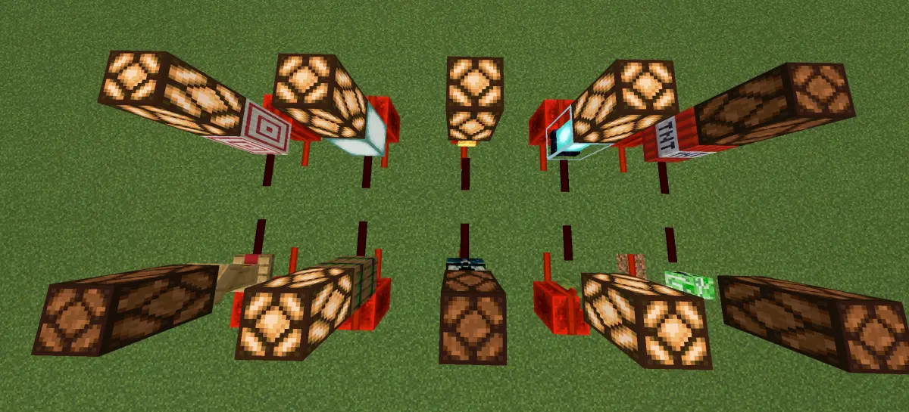
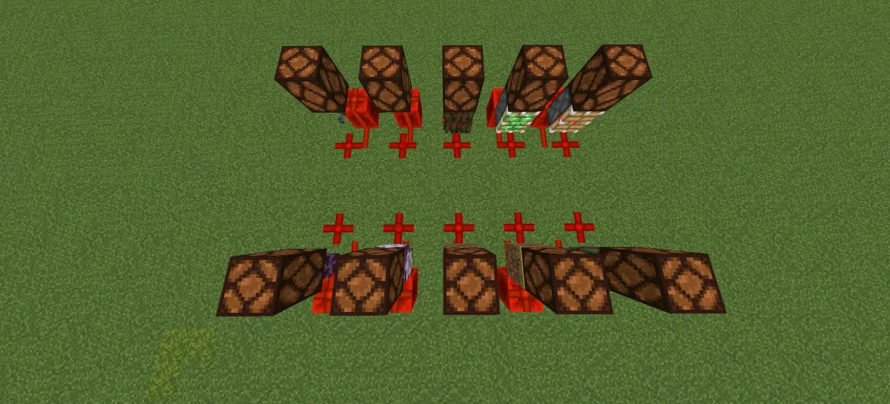
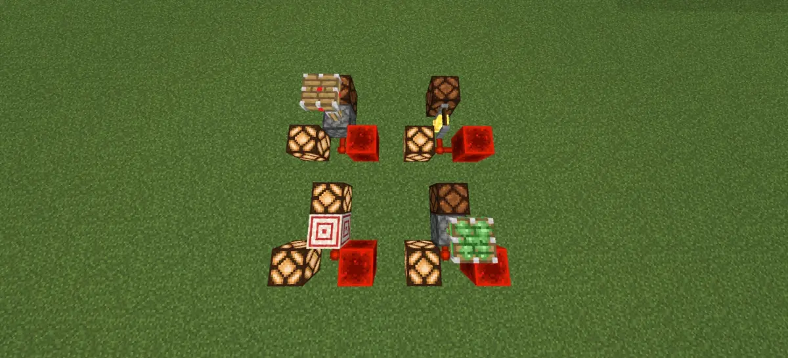
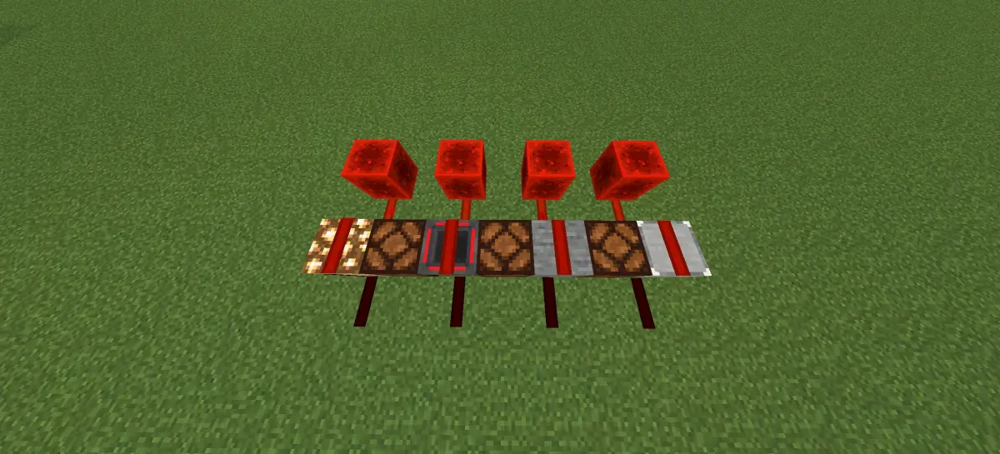

这里的话，主要是为了方便别人查找，不需要一个一个再去测试只不过我们这里使用的版本是正式版1.20.15，所以一些其他版本当中修改过的就没有再去测试了，不过如果我们记得的话，会提一下的，问题不大
另外，非法方块那边只会测试一些常见的那些比较冷门的非法方块，比如教育版那边的那种，就不会进行测试，问题不大
另外就是在这里展示出来的方块都有一个前提那就是红石粉能放在上面，那些红石粉不能放上去的，当然就不在测试范围内，问题不大
这里的话，主要是介绍这几个在布线的時候可能会用到的性质，是否压线，是否可充能，是否可被粘，是否引线，不过其中有一些是看上去有一些是真的，我们也会具体分出来的，问题不大，只不过一个方块可能会分到多类当中，毕竟汇总也是个麻烦的事，只不过可能不重要的就省略了，而且图片当中也能看到，问题不大

不压线不可充能可被粘可放红石粉的方块，目前暂時是这些，各种玻璃，两种活塞，冰，霜冰，红树根，观察者这几种，注意不压线的意思是不管从上往下还是从下往上都不压，那种单向传导的不在此列，问题不大

不压线不可充能不被粘可放红石粉的方块只有这5种，结构空位，八层雪，唱片机，脚手架，隐形的基岩，其中八层雪以及浮空脚手架需要利用PT堆积来制作，结构空位生存模式看不到，隐形的基岩就不用说了，根本拿都拿不到，所以相当于只有唱片机能用，问题不大
暂時没有找到同時具有这两种性质的方块，问题不大

可压线不可充能还要能放红石粉，这种类型的方块非常难找，基本上是找了个遍，最后旧版本只找到这一种，就是TNT，但是如果你想用它的话，你就得把TNT爆炸关了，不然直接就给你炸了，不过，新版本加入的这个铜灯泡也属于这种类型，所以算是多了一种选择，问题不大
如上面所说，光是可压线不可充能的方块就只有TNT和新版本加入的铜灯，还要不可被粘的话就没了，问题不大

可压线可充能不被粘并且可以放红石粉，这种类型的方块还是挺多的我们就不一一介绍了，而且这里也只列举了一些比较常见的，其他像是客户端占位符方块，屏障方块之类的不常见的非法方块就不放了，主要这个类型的方块比较多，所以就放几个典型的，反正选择也挺多的，问题不大

假不压线就是这种看上去不压线，但实际上会压线的方块，这里暂時只找到这10种，标靶，海晶灯，钟，信标，讲台，木桶，尖啸体，垂滴叶，头颅，TNT，实际上还有像客户端占位符方块之类的也是，但是属于冷门非法方块这里就不展示了，至于充能情况，看与之相连的灯有没有亮就是了，问题不大

假压线的方块，目前只找到这些，锁链，红树根，草径，耕地，紫颂花，紫颂植物，嗅探兽蛋，两种活塞，隐形的基岩，实际上，像是拼图方块之类的也是属于这种类型，不过因为比较冷门，就没有放出来了，这种就是典型的看上去压线，但实际上不压线的，充能的话，目前找到的都无法充能，问题不大

假引线就是看似改变了红石线的朝向，但实际上没有改变，目前我们只找到这四个，两种活塞，钟，标靶，不过其中标靶虽然是假引线，但是依然会弱充能自己，两种活塞也会激活自己，只有钟这个真的就只是看看就没用了而已，问题不大
这个能够引线的当中除了刚才展示的假线之外就都是真引线了，基本就是大部分的红石元件，所以也不予展示了，问题不大

这个单向导线就是，只能从下往上传递信号，但不能从上往下，比较经典的就是半砖了，除此之外，找到的还有楼梯，漏斗和莹石，这几个全都不可充能，问题不大
其实没有什么特别的地方，只是单纯为了帮助别人查找，就总结了一下，只不过因为我们可能在这方面也不算很专业，可能会有部分遗漏的，如果有可以评论区补充，问题不大
另外，那些比较冷门的非法方块以及教育版的方块就不要提了，毕竟这一般也都是在布线的時候才会要找，肯定不会去用那些奇怪的方块的，问题不大
行吧，那就这样，如果觉得有帮助的话就行吧，水个专栏，问题不大
测试版本：正式版1.20.15，如有不同，可能是版本差异造成